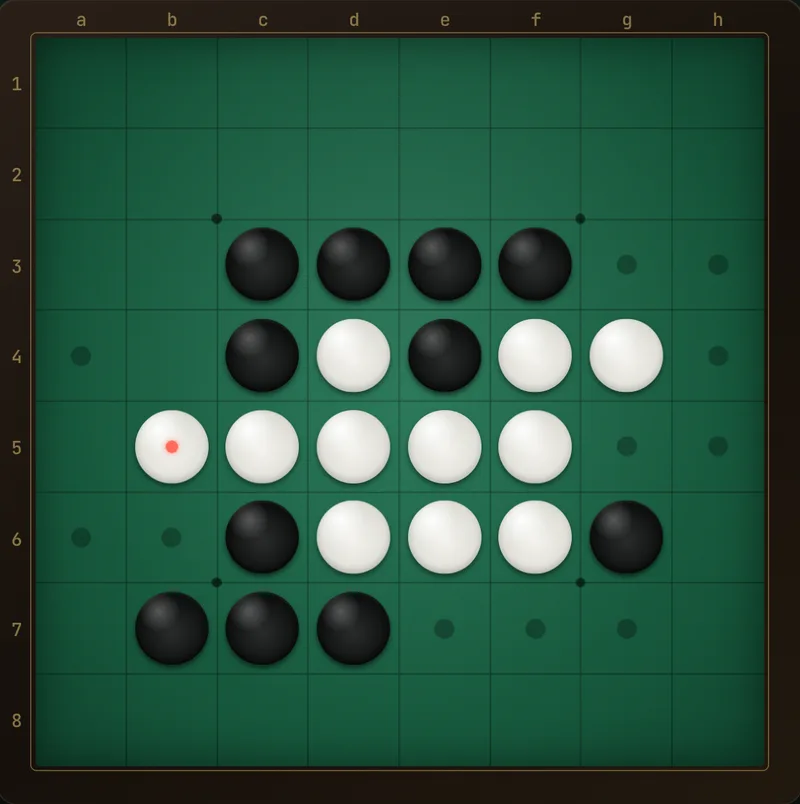
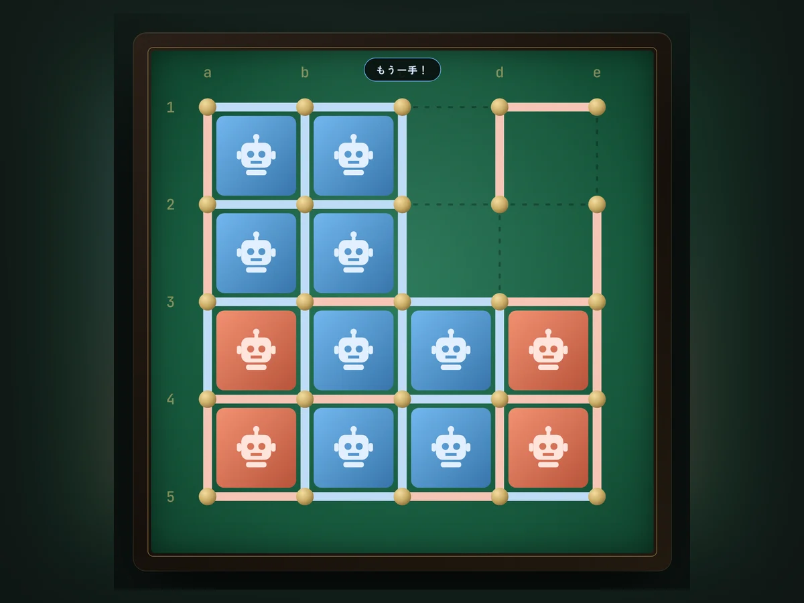
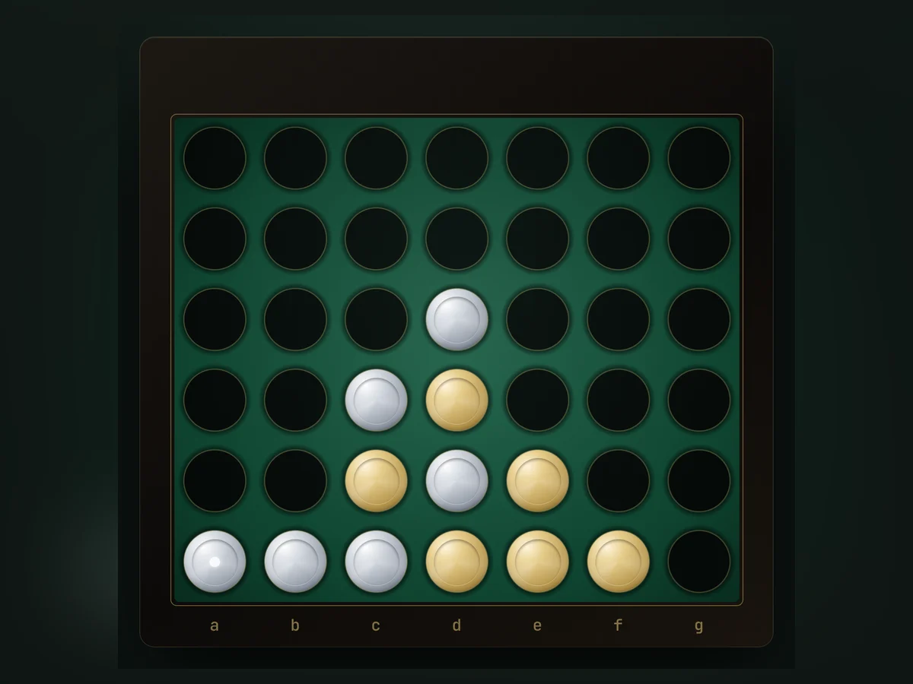
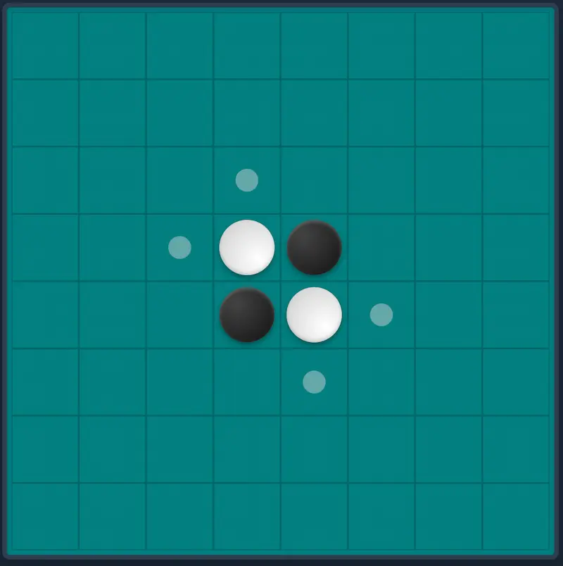
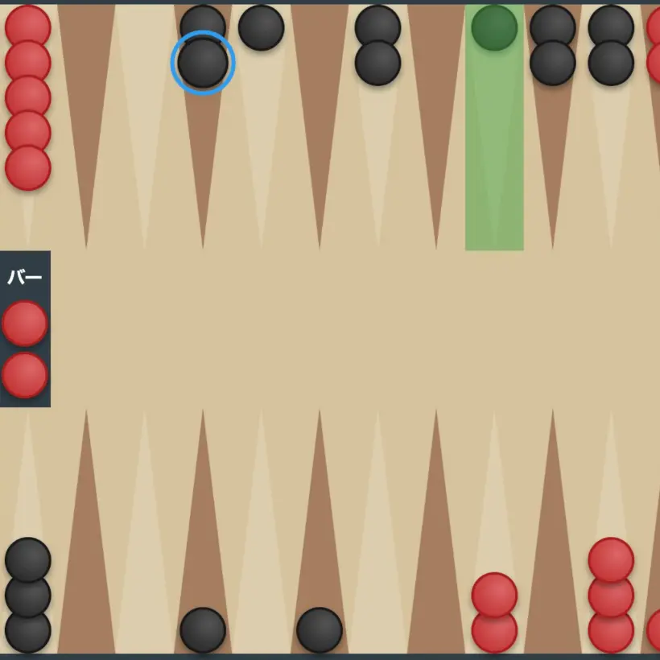
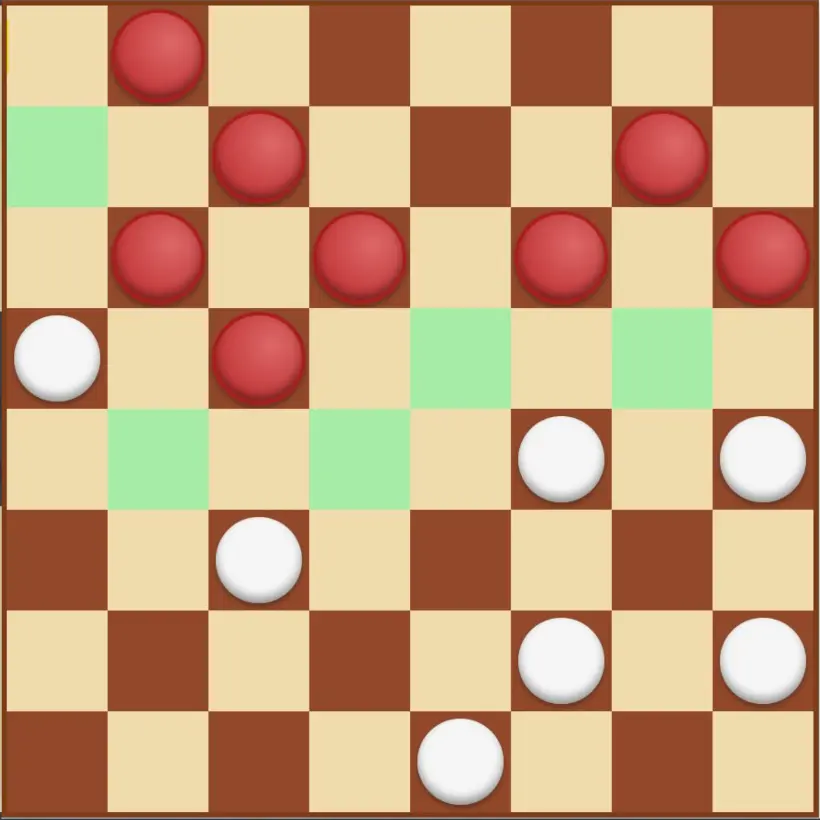
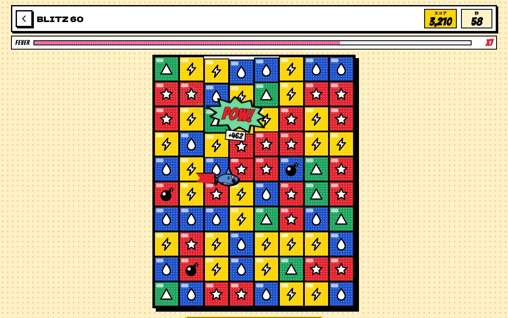
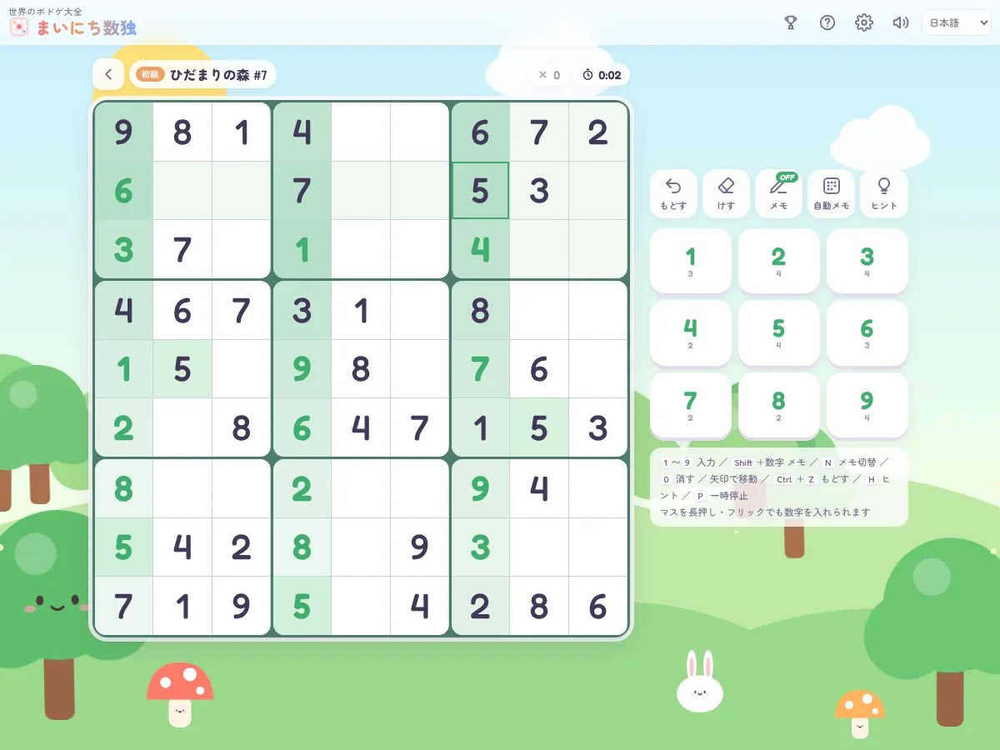

BOARD & PUZZLE
じっくり考える、定番ゲーム。
ルールは知っていても、相手が強いと奥が深い。手軽に遊べるパズルから、本気のAIと戦えるボードゲームまで。

BOARD GAME · NEW
将棋 SHOGI
Floodgateの対局データ（約2,200万局面の棋譜と評価値）から学習した評価関数で指す将棋AI。最弱は初心者向けの1手読みから10段階、駒落ち対応。20級〜三段の14ステップを点数制で学べるレッスン、実戦・創作風の詰将棋、悪手の復習つき。
対局をはじめる
BOARD GAME
Reversi V4
約4,800万局面で学習した評価関数と終盤20マスの完全読みを積んだ本格AI。10段階の強さ、9ステップのレッスン、170問の詰めオセロと今日の一問、悪手がわかる振り返り分析、棋譜のURL共有つき。
対局をはじめる
BOARD GAME · NEW
ドット・アンド・ボックス
点と点を線で結び、箱の4辺目を引いたら自分の箱。連鎖を数える「長鎖ルール」が勝負を決める頭脳戦。完全読みソルバーを積んだ8段階AI、5ステップのレッスン、45問の詰めドットつき。
対局をはじめる
BOARD GAME · NEW
コネクトフォー
コインを落として縦・横・斜めに4つ並べたら勝ち。完全読みの8段階AI（最強は先手必勝を逃さない）、5ステップのレッスン、45問の「N手で勝て」パズルつき。
対局をはじめる
BOARD GAME
リバーシ v3.1
多彩なタイプのAIとCPU同士の対戦も楽しめる、ひとつ前のバージョン。

BOARD GAME
バックギャモン
サイコロの運と読みがせめぎ合う、世界最古級のボードゲーム。

BOARD GAME
チェッカー
斜めに進んで、跳び越えて取る。世界中で親しまれる古典の頭脳戦。

PUZZLE
さめが〜め
同じ色のブロックをまとめて消す、懐かしの落ち物パズル。大きくつなげて高得点を狙おう。

PUZZLE
無限数独
問題は尽きることなく、いつでも新しい一問。すきま時間の頭の体操に。